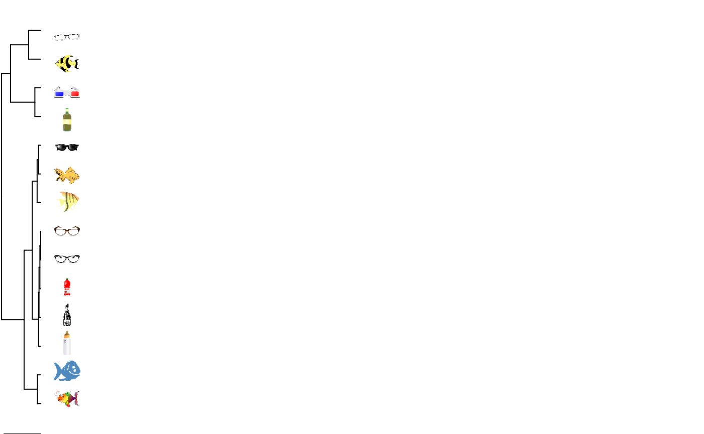
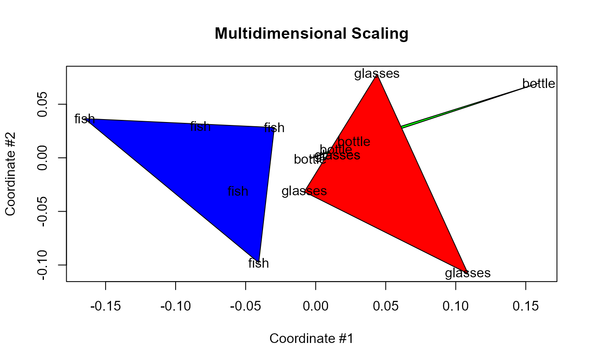

Load the package, the example dataset for clustering complex shapes and we define a vector of correct labels.
library(pdc)
data("complex.shapes", package = "pdc")
truth <- rep(c("fish", "bottle", "glasses"), c(5, 4, 5))We set a larger minimum time-delay of 5 to increase robustness over discretization errors when searching for the optimal delay.
ent <- entropyHeuristic(complex.shapes, t.min = 5, t.max = 10)
summary(ent)
#> Embedding dimension: 3 [ 3,4,5,6,7 ]
#> Time delay: 5 [ 5,6,7,8,9,10 ]This is a plot of the entropy heuristic over time-delays and embedding dimensions.
plot(ent)Now, we apply the clustering algorithm.
clust <- pdclust(complex.shapes, m = ent$m, t = ent$t)Using the function rasterPlot, we get a dendrogram of
the clustering solution with the images as leafs.
data("complex.shapes.raw", package = "pdc")
rasterPlot(clust, complex.shapes.raw$images)And, finally, this is the multi-dimensional scaling projection onto two dimensions:
Now, what if we use some sub-optimal clustering:
clust <- pdclust(complex.shapes, 3, t = 1)
rasterPlot(clust, complex.shapes.raw$images)
